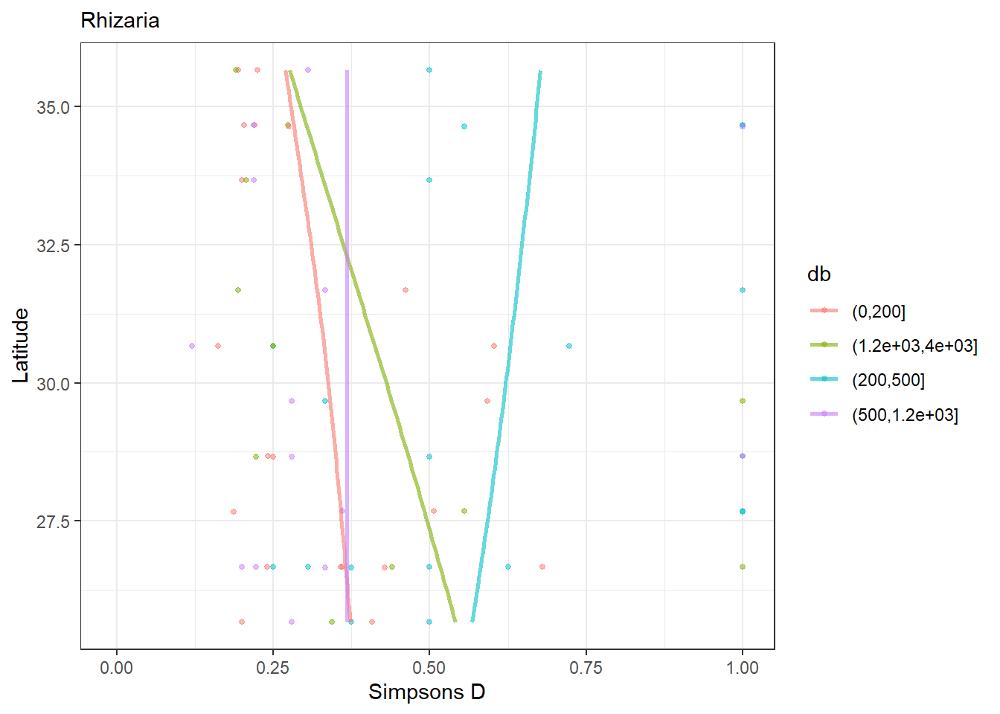
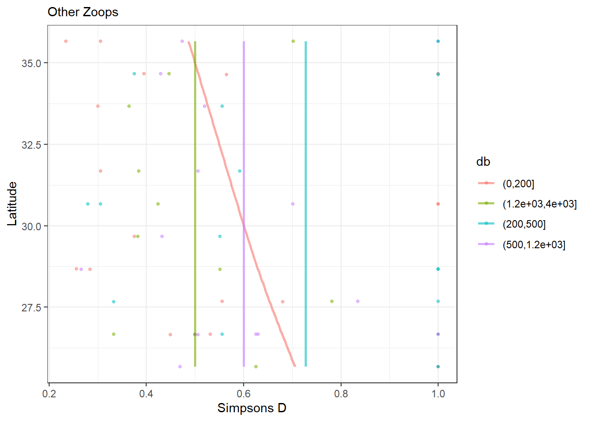

rm(list = ls())
library(EcotaxaTools)
library(ggplot2)
library(tibble)
uvp_dat <- ecopart_import("~/BV_transect_export") #load in initial ecopart object
# we need to trim out the hs casts
# One way to do that would be to hard-code indices for those but that's not reliable
#So I'm using regex
#get index of hs data for both par and zoo files
hs_index_par <- grep("hs",names(uvp_dat$par_files))
hs_index_zoo <- grep('hs', names(uvp_dat$zoo_files))
uvp_dat$par_files <- uvp_dat$par_files[-hs_index_par]
uvp_dat$zoo_files <- uvp_dat$zoo_files[-hs_index_zoo]Taxa Richness as a funciton of latitude
In this analysis we are going to look at the richness of different taxa along the latitudinal gradient. We’ll use simpson’s diversity index. There’s a wide range of how this is calculated but I like to do the probability of two randomly selected individuals being the same group. One important caveat for our approach here is that not all taxa are identified to the same specificity. Some are genera, some are family, some are even more broad. This can greatly influence the reliability of this index. This is particularly important to think about with Rhizaria. Those we can identify with much more specificity than other groups. For that reason, if we just did best possible taxonomic category, our biodiversity index would just be a function of overall rhizaria abundance. So I’m going to split up Rhizaria biodiversity and other zooplankton diversity. Notably, I’m excluding trichodesmium which is a phytoplankton.
1 - Getting our data set up
First, we need to set up our data frames. We only need the identification data here, not the volumes. I’m going to make two lists, one with just the Rhizaria, another with just the other zooplankton
Rhiz_names <- c('Rhizaria', 'living', 'not-living', 'Collodaria') #these are going to be used as an index to keep rhizaria
other_names <- c('living', 'Actinopterygii','Alciopidae','Amphipoda','Annelida','not-living','Copepoda','Chaetognatha','Cnidaria','Crustacea','Ctenophora','Decapoda','Echinodermata','Eucalanidae','Hydrozoa','Ostracoda','Polychaeta','Pteropoda','Salpidae','Siphonophorae','Tomopteridae')
rhiz_dat <- add_zoo(uvp_dat, names_to, 'Rhiz_or_not', Rhiz_names, suppress_print = T)
other_zoop <- add_zoo(uvp_dat, names_to, 'Zoop', other_names, suppress_print = T)
trim_to <- function(df, match_col, drop_names) {
rdf <- df[which(!(df[[match_col]] %in% drop_names)),]
return(rdf)
}
rhiz_only <- lapply(rhiz_dat$zoo_files, trim_to, 'Rhiz_or_not',c('living','not-living'))
other_only <- lapply(other_zoop$zoo_files, trim_to, 'Zoop',c('living','not-living'))2 - Calculating diversity index.
Now, I have two lists of tibbles: one with just the rhizaria and one with all other zooplankton. We’ll want to loop through these and assign them diversity values.
Let’s define a function for diversity:
#' Get Simpson's Diversity Index
#'
#' @param vect a character vector of taxa names
simpsons_d <- function(vect) {
prob <- table(vect) / length(vect)
return(sum(prob^2))
}Now we can use that function for calculating the diversity with each cast. But first, we’ll want to separate out the casts into euphotic, upper meso, lower meso, and bathypelagic
db <- c(0,200,500,1200,4000)
rhiz_bins <- lapply(rhiz_only, bin_taxa,db)
zoo_bins <- lapply(other_only, bin_taxa,db)
#a quicker way to get it with existing functions
rhiz_bins <- lapply(rhiz_bins, function(df) {split(df, f = df[['db']])})
zoo_bins <- lapply(zoo_bins, function(df) {split(df, f = df[['db']])})
sim_d <- function(df) {
if(nrow(df) == 0) {
return(NA)
}
prob <- df$x/sum(df$x)
return(sum(prob^2))
}
rhiz_div <- vector('list', length(rhiz_bins))
zoo_div <- vector('list', length(zoo_bins))
names(rhiz_div) <- names(rhiz_bins)
names(zoo_div) <- names(zoo_bins)
for(i in 1:length(rhiz_div)) {
rhiz_div[[i]] <- lapply(rhiz_bins[[i]], sim_d)
zoo_div[[i]] <- lapply(zoo_bins[[i]], sim_d)
rhiz_div[[i]] <- data.frame(db = names(rhiz_div[[i]]),
sim_d = unlist(rhiz_div[[i]]),
profile_id = names(rhiz_div[i]))
zoo_div[[i]] <- data.frame(db = names(zoo_div[[i]]),
sim_d = unlist(zoo_div[[i]]),
profile_id = names(zoo_div[i]))
}
rhiz_div <- do.call(rbind, rhiz_div)
zoo_div <- do.call(rbind, zoo_div)
row.names(rhiz_div) <- NULL
row.names(zoo_div) <- NULL
#trim out the deepest observations
rhiz_div <- rhiz_div[rhiz_div$db %in% levels(cut(db,db)),]
zoo_div <- zoo_div[zoo_div$db %in% levels(cut(db,db)),]And we’ll have to merge those with latitude data
rhiz_div <- merge(rhiz_div,
data.frame(profile_id = uvp_dat$meta$profileid,
lat = uvp_dat$meta$latitude))
zoo_div <- merge(zoo_div,
data.frame(profile_id = uvp_dat$meta$profileid,
lat = uvp_dat$meta$latitude))
ggplot(rhiz_div, aes(x = lat, y = sim_d, col = db))+
geom_point(alpha = .5, size = 1)+
geom_line(stat = 'smooth', method = 'gam',
alpha = .6, span = 5, size = 1)+
coord_flip()+
labs(x = 'Latitude', y = 'Simpsons D', subtitle = 'Rhizaria')+
theme_bw()`geom_smooth()` using formula 'y ~ s(x, bs = "cs")'Warning: Removed 18 rows containing non-finite values (stat_smooth).Warning: Removed 18 rows containing missing values (geom_point).
ggplot(zoo_div, aes(x = lat, y = sim_d, col = db))+
geom_point(alpha = .5, size = 1)+
geom_line(stat = 'smooth', method = 'gam',
alpha = .6, span = 5, size = 1)+
coord_flip()+
labs(x = 'Latitude', y = 'Simpsons D', subtitle = 'Other Zoops')+
theme_bw()`geom_smooth()` using formula 'y ~ s(x, bs = "cs")'Warning: Removed 19 rows containing non-finite values (stat_smooth).Warning: Removed 19 rows containing missing values (geom_point).